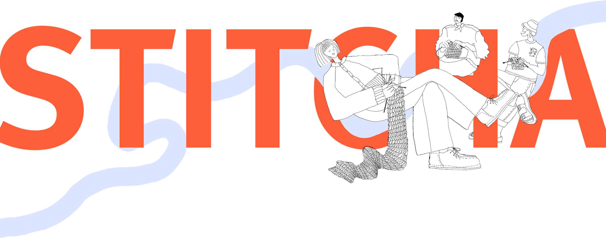
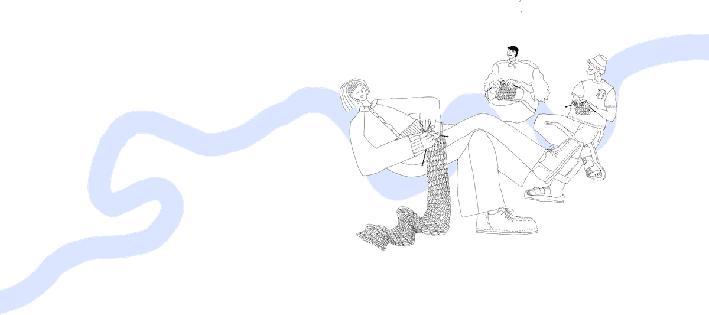
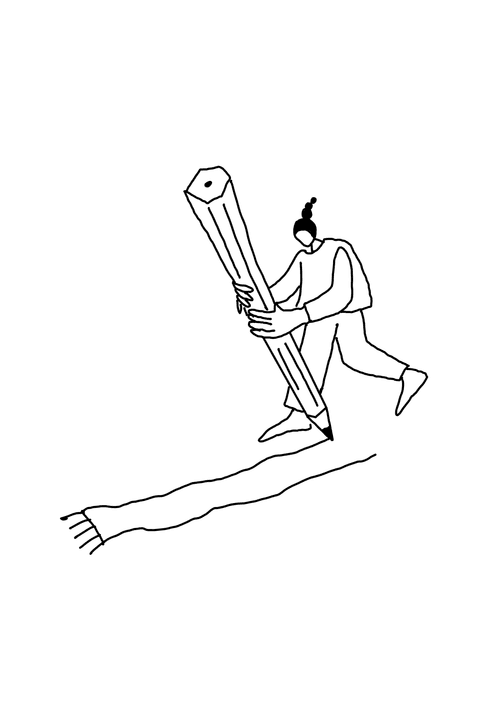

Strickanleitungen
an dich anpassen
Die Plattform, die wirklich ALLES rund
ums Stricken an einem Ort vereint


Mit Stitcha kannst du
Ideen schnell
visualisieren
Überblick
behalten
dich mit der Community
austauschen und treffen
Inspiration
finden

Strickwissen
nachschlagen
Strickanleitungen
an dich anpassen
Ideen schnell
visualisieren
Überblick
behalten
dich mit der Community
austauschen und treffen
Inspiration
finden
Strickwissen
nachschlagen
Für alle
Designer:innen, die…
- eine automatische Gradierung
- Anleitungen einfach erstellen
- ihre Ideen vor dem Stricken visualisieren
- organisierte Teststricks
Stricker:innen, die…
- eine perfekte Passform
- weniger rechnen
- nie wieder Maschenproben doppelt stricken
- nie wieder italienisch abketten googeln
- Anleitungen auf ihr Garn umrechnen
- Überblick über ihre Projekte

- eine automatische Gradierung
- Anleitungen einfach erstellen
- ihre Ideen vor dem Stricken visualisieren
- organisierte Teststricks
- eine perfekte Passform
- weniger rechnen
- nie wieder Maschenproben doppelt stricken
- nie wieder italienisch abketten googeln
- Anleitungen auf ihr Garn umrechnen
- Überblick über ihre Projekte
möchten.